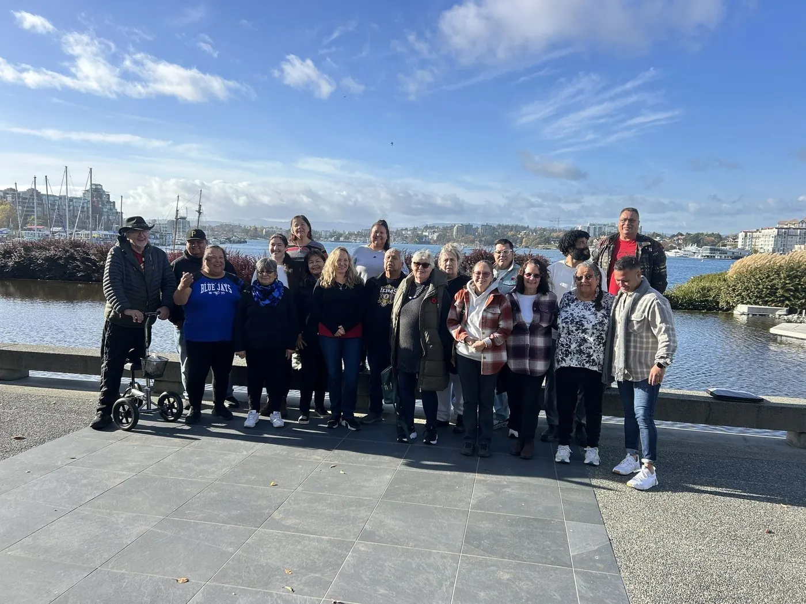
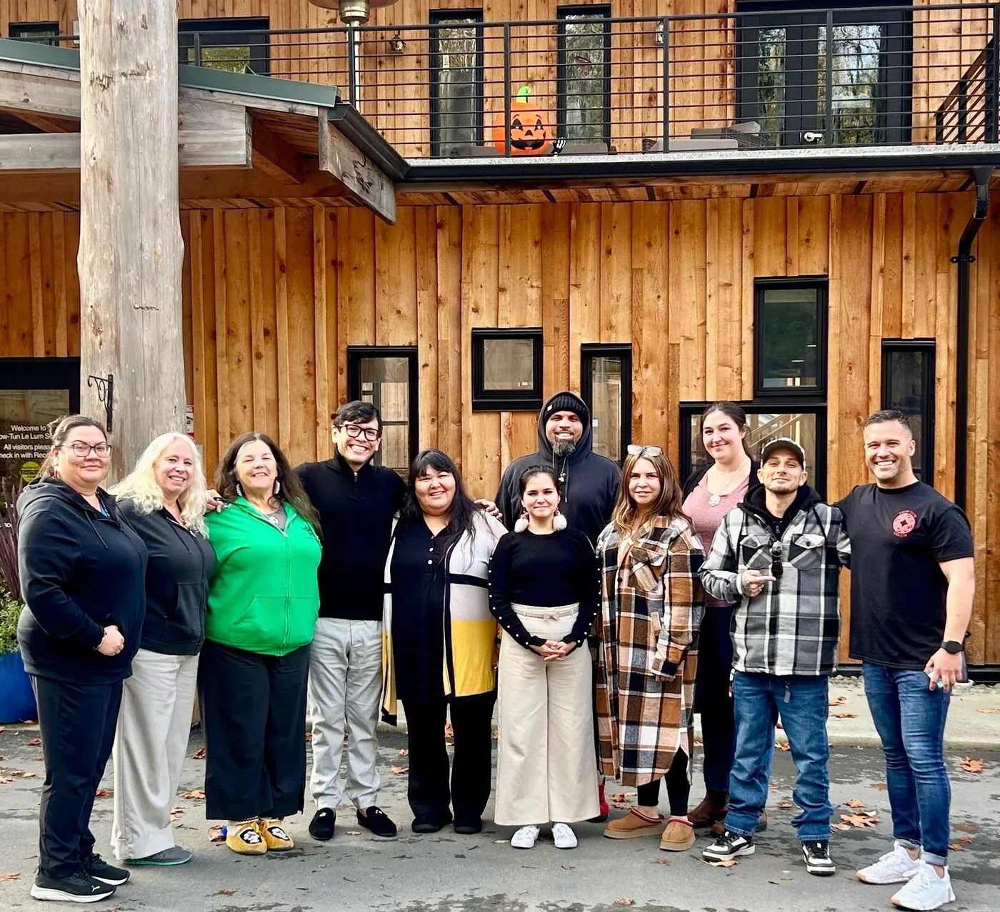

A pathway for every role in your organisation
Every I-SPOT program is trauma-informed and culturally grounded, delivered face-to-face, as live facilitated online sessions, or as self-paced online learning, across Australia, Canada and Aotearoa New Zealand. Programs are built for Aboriginal and Torres Strait Islander communities, and for the non-Indigenous services who work alongside them.
The LALA framework: Look, Ask, Listen, Act
Every I-SPOT program is structured around LALA, a four-step framework grounded in Indigenous-led research and shaped directly by lived experience of suicide.

Look
Recognise the signs of suicide risk in culturally relevant ways, not just clinical checklists.
Ask
Build the confidence to ask clearly and directly about suicide, with respect and safety.
Listen
Listen without judgement, and hold space for stories of pain and lived experience.
Act
Co-create a safety plan with the person, drawing on both cultural and clinical tools.
Community & Frontline Workshop
The core I-SPOT program: a trauma-informed crisis intervention and cultural safety workshop open to community members and frontline workers alike, and suitable for all ages.
Participants build practical skills for recognising distress, responding safely in a crisis, and connecting people to appropriate support, all taught through a cultural safety lens that mainstream programs consistently miss. It's also a strong fit for non-Indigenous service providers who work closely with Aboriginal and Torres Strait Islander communities.
Train-the-Trainer
Build lasting capacity inside your own organisation or community by training your people to deliver I-SPOT themselves.
This program has been developed and piloted with partner communities in Canada, and is designed to transfer skills, not just content, so that facilitation stays close to the community it serves long after our team leaves.


Building lasting capacity with Train-the-Trainer partner communities in Canada.
Youth Program
An age-appropriate adaptation of I-SPOT for schools and youth services, built to meet young people where they are.
Drawing on trauma-informed youth frameworks developed for First Nations young people, this program gives students, educators and youth workers practical tools for supporting themselves and each other, delivered in a way that feels relevant, not clinical.
Organisational Cultural Safety
A structured rollout for organisations working through their Reconciliation Action Plan, from Reflect through to Elevate.
We work with your leadership and Indigenous staff networks to embed cultural safety and trauma-informed practice across your whole workforce: not as a one-off session, but as a program that matures alongside your RAP commitments.
Indigenous-led, every time
Facilitation is central to I-SPOT's integrity. Every session is led by an Aboriginal or Torres Strait Islander facilitator and, wherever possible, delivered by two facilitators to hold cultural, emotional and learning safety for the whole group.
Indigenous-led delivery
Every program is delivered by an Aboriginal or Torres Strait Islander lead facilitator.
Lived experience, prioritised
Facilitators with lived or living experience of suicide are preferred wherever possible.
Two-facilitator model
Preferred for group and face-to-face settings, to support safety for everyone in the room.
Culturally trained co-facilitators only
A non-Indigenous co-facilitator is only involved where they've received appropriate cultural training and have a track record of working respectfully with community.
From first conversation to delivery
We reply to every enquiry within two business days.
Yarn with our team
We start with a conversation about your community or organisation's needs, context and goals.
Choose your program
We recommend the right mix of workshops, format and timeline: face-to-face, online, or blended.
Deliver and embed
Our facilitators deliver the training, with options to build internal capacity through Train-the-Trainer.
Stay connected
We follow up on outcomes and stay available as an ongoing cultural safety partner.
Let's find the right program for your community
Tell us about your organisation and who you support. We'll recommend a program, format and timeline that fits.
- Response time
- Within two business days
- Delivering in
- Australia, Canada and Aotearoa New Zealand